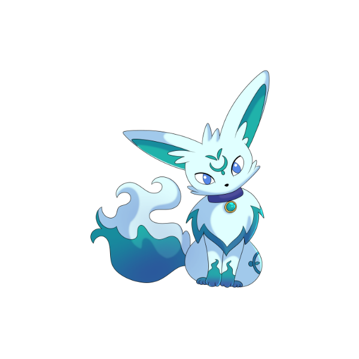
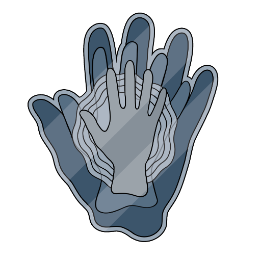
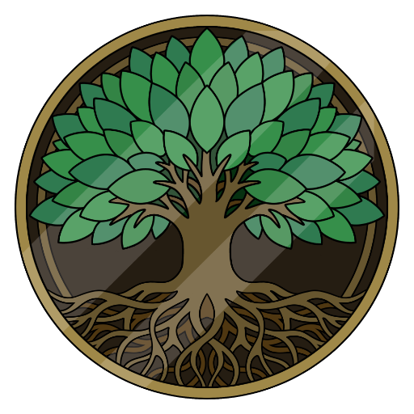
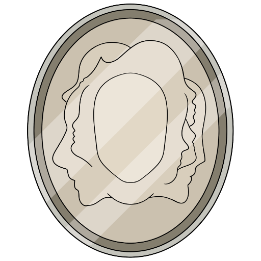
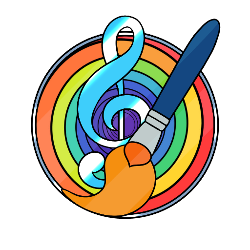
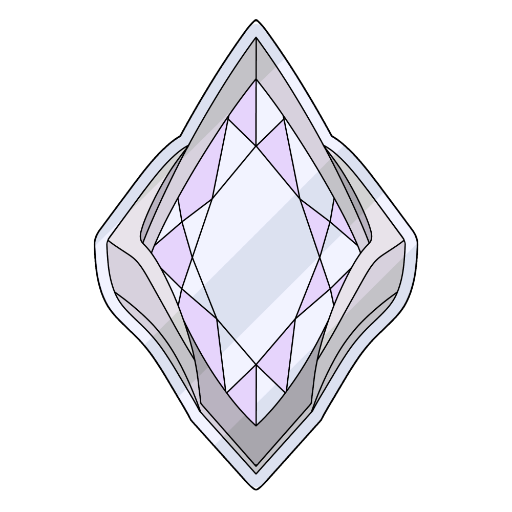

TERRA
Cervello e Percezione
Radicati nel reale, esplora l'infinito.
GLI ABITANTI DELLA MIA TERRA

Silen
La forma di Silen che esplora i sensi e la percezione.
Silen è la specie ancestrale da cui discendono tutti i visitatori del nostro universo. Nella sua forma terrestre abita i sensi e la percezione: i corpi che ricordano, i colori dei suoni, i volti che sfuggono, i doni che brillano fuori misura. Un viaggio nel cervello umano e nelle sue meraviglie, per scoprire che percepire il mondo è già, di per sé, un'esperienza straordinaria.OGNI LUNA UN MODO DI PERCEPIRE
Ogni luna della Terra racconta una delle meraviglie del cervello umano: corpi che ricordano, sensi che si intrecciano, volti che sfuggono.
Esplora le schede dedicate a cervello e percezione, e scopri quanto sia straordinario guardare il mondo.
Ogni scheda ha due voci: Cos'è spiega il tema con parole chiare, La luna racconta lo attraversa con la voce del progetto. Sono testi divulgativi: non sostituiscono il parere di un professionista — le storie, vere e proprie, stanno nei libri.

Arto Fantasma
La memoria del corpo oltre il corpo.
L'arto fantasma è la sensazione persistente di un arto che non c'è più, dopo un'amputazione o una lesione. Nasce da come il cervello conserva la mappa del corpo: è un fenomeno neurologico reale, studiato da oltre un secolo, e oggi si affronta anche con tecniche come la terapia dello specchio.

Ipertimesia
Il tempo non passa: si deposita.
L'ipertimesia è la capacità straordinaria di richiamare ricordi autobiografici con dettagli e date precise. Non è un disturbo: è una memoria autobiografica molto sviluppata, e chi ne è dotato la descrive come un archivio che non si spegne mai.

Prosopagnosia
Volti senza nome, volti senza memoria.
La prosopagnosia, o cecità ai volti, è la difficoltà a riconoscere i volti, anche di persone familiari. Non dipende da problemi di vista o di memoria: è una difficoltà specifica del cervello nel processare i volti, e chi la vive impara a basarsi su voce, passo e contesto.
Sindrome Savant
Un dono che brilla fuori misura.
La sindrome savant è una condizione rara in cui una persona — spesso con una condizione dello sviluppo come l'autismo — possiede abilità eccezionali in un settore ristretto: memoria, calcolo, musica, disegno. Il talento è reale, ma è solo una parte di una persona intera.

Sinestesia
Quando i suoni hanno un colore.
La sinestesia è un fenomeno in cui i sensi si incrociano: per esempio, ogni lettera o numero evoca stabilmente un colore preciso. È congenita, benigna e più diffusa di quanto si pensi: non è immaginazione, è un modo diverso in cui il cervello collega le informazioni.

Afantasia
Immaginare, anche senza immagini.
L'afantasia è l'assenza o la riduzione delle immagini mentali visive: chi vive con l'afantasia non vede le immagini con la mente, pur ricordando i fatti. Non è mancanza di fantasia — si pensa lo stesso, solo con altri canali.
INFORMAZIONI E LICENZE
Le opere esposte sono tutelate da diritto d'autore. Per collaborazioni, richieste professionali o per consultare il catalogo delle licenze autorizzate, puoi trovarmi qui:
Ogni riproduzione non autorizzata è vietata.